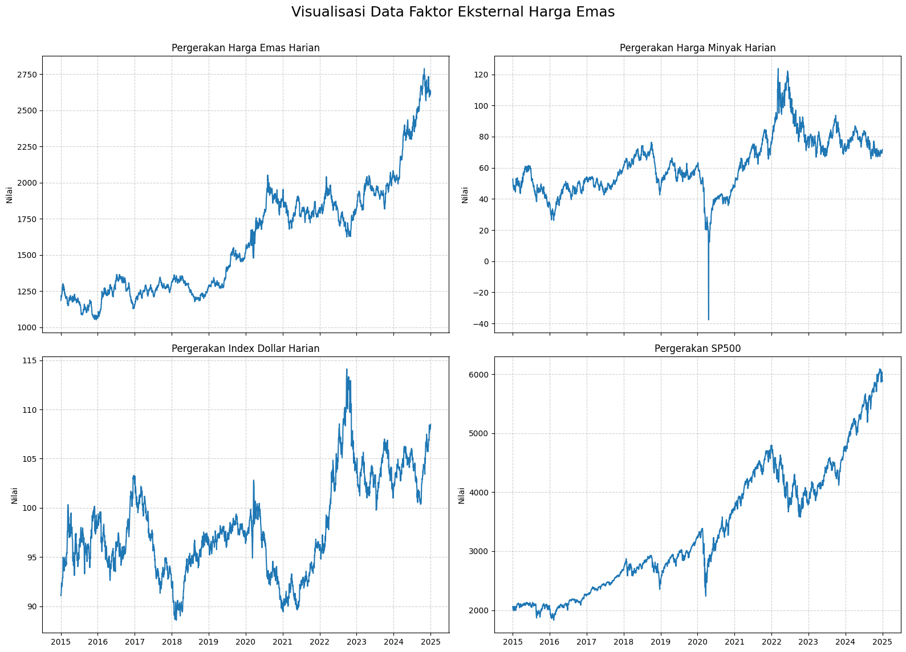
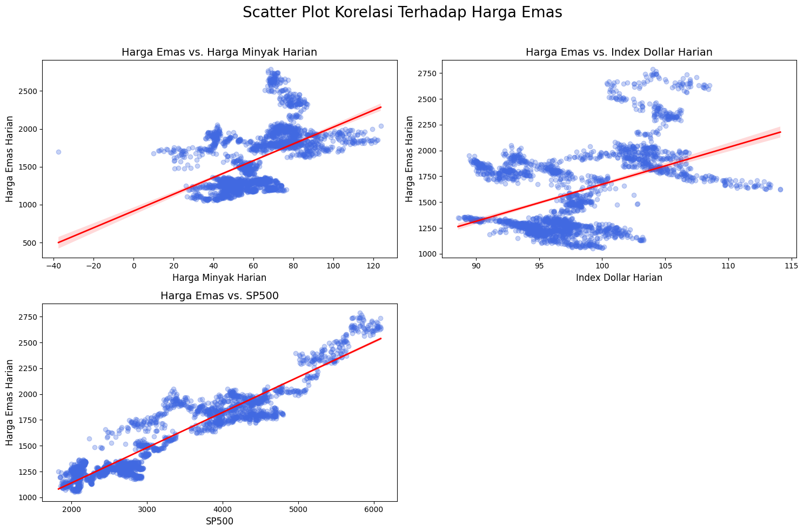

Ekplorasi Data#
import yfinance as yf
import pandas as pd
import warnings
from forex_python.converter import CurrencyRates
warnings.simplefilter(action="ignore", category=FutureWarning)
# -----------------------
# 1. Ambil data dari Yahoo Finance
# -----------------------
start_date = "2015-01-01"
end_date = "2025-01-01"
# Fungsi bantu untuk ambil data dan rename kolom Close
def get_yf_data(ticker, col_name):
data = yf.download(ticker, start=start_date, end=end_date, progress=False)[["Close"]]
data.rename(columns={"Close": col_name}, inplace=True)
return data
gold = get_yf_data("GC=F", "Gold_Close")
oil = get_yf_data("CL=F", "Oil_Close")
dxy = get_yf_data("DX-Y.NYB", "DXY_Close")
sp500 = get_yf_data("^GSPC", "SP500_Close")
# Gabungkan semua menjadi satu DataFrame
df = pd.concat([gold, oil, dxy, sp500], axis=1)
df_reset = df.reset_index()
df.columns = ["Harga Emas Harian", "Harga Minyak Harian", "Index Dollar Harian", "SP500"]
df.head()
| Harga Emas Harian | Harga Minyak Harian | Index Dollar Harian | SP500 | |
|---|---|---|---|---|
| Date | ||||
| 2015-01-02 | 1186.000000 | 52.689999 | 91.080002 | 2058.199951 |
| 2015-01-05 | 1203.900024 | 50.040001 | 91.379997 | 2020.579956 |
| 2015-01-06 | 1219.300049 | 47.930000 | 91.500000 | 2002.609985 |
| 2015-01-07 | 1210.599976 | 48.650002 | 91.889999 | 2025.900024 |
| 2015-01-08 | 1208.400024 | 48.790001 | 92.370003 | 2062.139893 |
TREN HARGA EMAS HARIAN#
import matplotlib.pyplot as plt
final_df = df
final_df.dropna(inplace=True)
final_df.index.name = 'Date'
# --- 2. Proses Plotting Data ---
columns_to_plot = final_df.columns
num_plots = len(columns_to_plot)
nrows = (num_plots + 1) // 2
ncols = 2
fig, axes = plt.subplots(nrows=nrows, ncols=ncols, figsize=(16, 12), sharex=True)
axes = axes.flatten()
for i, col in enumerate(columns_to_plot):
ax = axes[i]
ax.plot(final_df.index, final_df[col], label=col)
ax.set_title(f'Pergerakan {col}', fontsize=12)
ax.set_ylabel('Nilai')
ax.grid(True, linestyle='--', alpha=0.6)
for j in range(num_plots, len(axes)):
axes[j].set_visible(False)
fig.suptitle('Visualisasi Data Faktor Eksternal Harga Emas', fontsize=18)
fig.tight_layout(rect=[0, 0.03, 1, 0.97])
# Menyimpan plot ke dalam file
plt.savefig('visualisasi_data_keuangan.png')

Korelasi Faktor Eksternal Dengan Harga Emas#
from datetime import datetime
import matplotlib.pyplot as plt
import seaborn as sns
final_df = df
final_df.dropna(inplace=True)
# --- Bagian 2: Membuat Scatter Plot 📊 ---
y_var = 'Harga Emas Harian'
x_vars = [col for col in final_df.columns if col != y_var]
# Menentukan layout subplot
n_cols = 2
n_rows = (len(x_vars) + n_cols - 1) // n_cols
fig, axes = plt.subplots(n_rows, n_cols, figsize=(15, n_rows * 5))
axes = axes.flatten()
# Looping untuk membuat plot untuk setiap variabel x
for i, x_var in enumerate(x_vars):
# Menggunakan regplot dari seaborn untuk menampilkan garis regresi
sns.regplot(data=final_df, x=x_var, y=y_var, ax=axes[i],
scatter_kws={'alpha': 0.3, 'color': 'royalblue'},
line_kws={'color': 'red', 'linewidth': 2})
axes[i].set_title(f'Harga Emas vs. {x_var}', fontsize=14)
axes[i].set_xlabel(x_var, fontsize=12)
axes[i].set_ylabel(y_var, fontsize=12)
# Sembunyikan subplot yang tidak digunakan
for j in range(i + 1, len(axes)):
axes[j].set_visible(False)
fig.suptitle('Scatter Plot Korelasi Terhadap Harga Emas', fontsize=20)
fig.tight_layout(rect=[0, 0, 1, 0.96])
plt.savefig('scatter_plots_korelasi.png')
# --- Bagian 3: Membuat Heatmap Korelasi 🔥 ---
# Hitung matriks korelasi
corr_matrix = final_df.corr()
# Buat plot heatmap
plt.figure(figsize=(12, 9))
sns.heatmap(corr_matrix, annot=True, cmap='coolwarm', fmt=".2f", linewidths=.5)
plt.title('Heatmap Korelasi Antar Variabel', fontsize=18)
plt.savefig('heatmap_korelasi.png')
